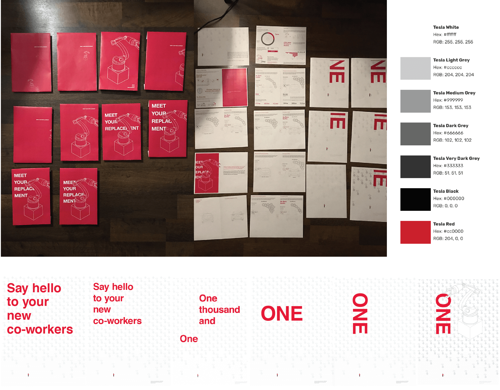
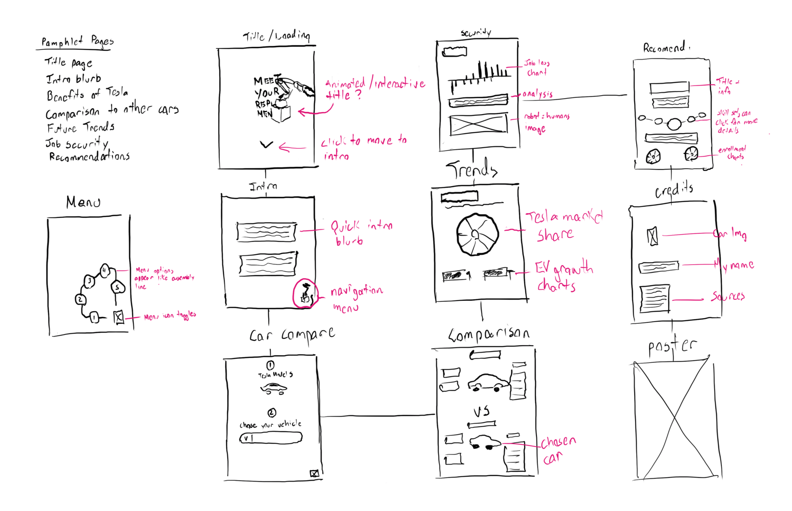

Meet Your Replacement
A cross-medium editorial campaign that advocates job risk to employees of automobile manufacturers through the use of statistical information.
Year
2017
Type
Information design
Roles
Research, Information Design, UI / UX
Problem
As the automotive industry experiences reform to design and production methods instigated by robotic innovation, will human workers still be necessary? How can we relay the risk of automation to workers while also encouraging a proactive contingency plan?
Tesla has set new industry standards that value efficiency and speed over job creation.
Outcome
I produced both a pamphlet and mobile app that visually bring order to a large and detailed topic. They conveyed (in a logical order) the trending decline of jobs, the rise in automation, why Tesla has become a leader and is thriving, and what they can do to ensure alternative career paths.

Research
I spent roughly 4 weeks producing a research document which collated various sources of statistical information on the auto industry such as sales, profits, and job losses. I also compared Tesla's production pipeline to that of traditional manufacturers.
 Approach
I felt it was important to keep the mindset of an auto worker while formulating my design in order to keep the information relatable. I achieved this through my research which gave me an improved understanding of standard practices for workers and what they expect to hear and see in their environment. My aim was to give the impression the campaign could have been produced by one of their own, giving it more appeal.
Be relatable.
Takeaway
Allow yourself to see things from their perspective.
Take the time to dive into the culture and practices of clients or target audiences, it will give more context and often times helps the work produced to become more effective.